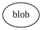
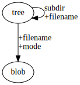
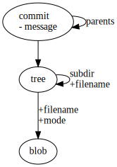
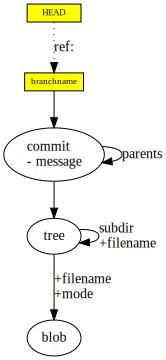
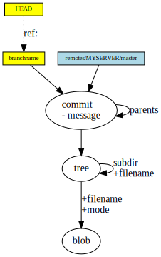

git note
Git for Computer Scientists
Storage
- git对象的存储形式为DAG， 有向无环图
- blob作为节点，存储数据，tree作为目录，指向其他子目录tree和数据blob，类似文件系统
-  & 
- commit指向tree节点， 同时指向其他commit节点, commit节点是git仓库随时间变化的一个个快照(snapshot)
- 
- References, heads, branches节点类似便利贴，此类节点"贴"在commit节点上，是整个DAG图上唯一可以改动的地方，并且可以随便移动，同时此类节点并不存储在git历史中，也不能在仓库之间直接转移，此类节点也可以比作书签，表达的意思是“我在这里干活”
- 每git commit一次，就会在DAG上增加一个节点， 同时把“便利贴”——现在正在工作的Branch节点指向新的commit节点
- HEAD是一个特殊的ref节点，这个ref节点指向当前正在工作的Branch节点
- 
- remote refs节点实质上由远程服务器控制，使用git fetch能在本机上更新remote refs节点的位置以及相应的commit节点
- 
- tag节点实际上由一个DAG中的节点和“便利贴”构成，DAG中的节点指向commit节点，便利贴则指向这个DAG中的节点，“便利贴”可通过git fsck --lost-found找回
- DAG中的节点能够在仓库之间转移，可以被打包以节省空间，而无用的节点可以被garbage collectd掉，总的来说git仓库的组成就是DAG和便利贴

The Working Directory, The Index and The HEAD
- HEAD即是上面所提到的ref节点，可以说是当前commit的快照
- Index可以说是提议的下一commit节点的快照
- Working Directory则是文件系统里目录，可以自由修改

History
对于不同的分支节点合并， 合并使用merge
对于冲突: 当然，也存在极少数的情况，你必须自己手动地告诉 Git 该怎么做。最为常见的就是大家都改动了同一个文件。即便在这种情况下，Git 还是有可能自动地发现并解决掉这些冲突。但是，如果两个人同时更改了同一个文件的同一行代码，或者一个人改动了那些被另一个人删除了的代码，Git 就不能简单地确定到底谁的改动才是正确的。这时 Git 会把这些地方标记为一个冲突，你必须首先解决掉这些冲突，然后再继续你的工作。
如果一个分支节点master所指向的commit节点是另一个分支节点dev所指向的commit节点的直接祖先
则分支节点master可以直接merge(移动分支节点master到分支节点dev所指向的commit节点(fastforward)
 ------>
------>
创建新commit节点，其祖先节点分别是原分支节点master与dev所指向的commit节点，注意分支节点master移动dev不移动, 即分支节点dev保持原状, 但此时若在分支节点dev上merge master则会导致fastward
如不是， 则merge(可能需要解决冲突，冲突文件会被直接标记)会commit一个新节点，此时冲突得到解决，且新commit节点其祖先节点分别是分支节点master与dev所指向的commit节点，注意分支节点A移动B不移动, 即分支节点dev保持原状, 但此时若在分支节点dev上merge master则会导致fastward， 和上面的情况类似
 ---------->
---------->
在本质上, fastward既是移动分支节点从原commit节点沿着路径一直到最新的commit子节点！
消除冗余commit节点，使用rebase
rebase不同于merge， merge在创建新节点的方式融合两个分支时， 新的commit节点拥有两个parent节点， 而使用rebase在融合后的新的commit节点只有一个parent节点， 当前分支的commit节点在log中被删除，留下的是rebase对象分支的commit节点
多次commit的情况也能解决
使用gc能将没有父节点的commit节点删除
对于同一分支，如果存在远程仓库与本地仓库处于同步状态，即存在一个另一个分支节点也(一般称作origin)指向当前最新的commit节点
- 一旦远程仓库commit新节点， 远程仓库领先于本地仓库节点， 则需要使用fetch命令将远程仓库的内容下载到本地仓库， 然后使用merge合并，两者可以统一为一个命令pull(本地工作目录在未经确认的情况下就会被远程分支更新)，当存在冲突时，解决办法和merge的冲突一样
- 同理本地仓库领先与远程仓库，则需要使用push将变动一次性配置到远程仓库上，当存在冲突时，pull下远程仓库， 解决冲突， 再次push
- question： 解决冲突后push为什么成功？; answer:push会让远程分支节点直接fastforward到解决冲突后的commit节点


other tutorials
- commonly used command -
- liaoxuefeng git getting Started
some note
使用命令
git log --graph --oneline --decorate --all获得图形化log--graph图形化--oneline即--pretty=oneline --abbrev-commit，简化commit信息--decorate展示分支-all展现所有分支
git如何忽略已经提交的文件 (
.gitignore文件无效)- 删除track的文件 (已经commit的文件)
git rm要忽略的文件git commit -a -m"删除不需要的文件"
- 在
.gitignore文件中添加忽略规则- 在
.gitignore文件中添加ignore条目, 如:some/path/some-file.ext - 提交
.gitignore文件:git commit -a -m "添加ignore规则"
- 在
- 推送到远程仓库是ignore规则对于其他开发者也能生效:
git push [remote]
- 删除track的文件 (已经commit的文件)
移除远程库，
git remote remove origin- 将你的git协议由https变为ssh,
git remote set-url origin git@github.com:JackTroy/JackTroy.github.io.git - 使用
git stash将当前working directory和index的修改保存，恢复到该branch的原本状态 - git仓库顶层文件夹命名和仓库本身无关！本地仓库文件夹名和远程仓库文件名可为不同名